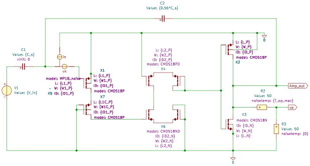
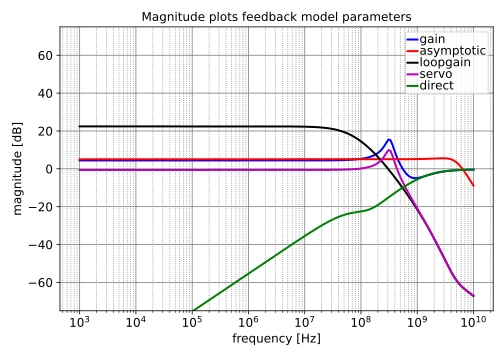
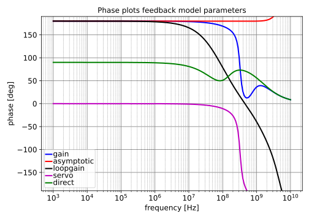
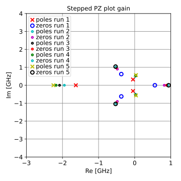
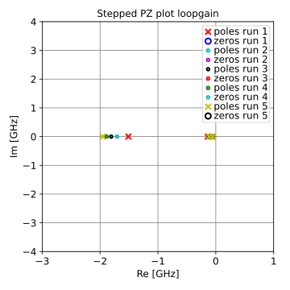
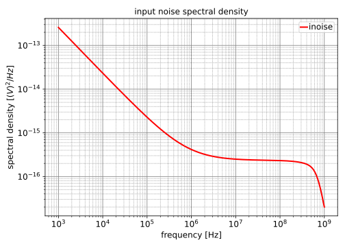

DC value = $-13.22$
| pole | Re [Hz] | Im [Hz] | Mag [Hz] | Q |
|---|---|---|---|---|
| p1 | $-57.12\cdot 10^{6}$ | $57.12\cdot 10^{6}$ | ||
| p2 | $-139.6\cdot 10^{6}$ | $139.6\cdot 10^{6}$ | ||
| p3 | $-1.511\cdot 10^{9}$ | $1.511\cdot 10^{9}$ | ||
| p4 | $-5.101\cdot 10^{9}$ | $5.101\cdot 10^{9}$ | ||
| p5 | $-25.12\cdot 10^{9}$ | $25.12\cdot 10^{9}$ |
| zero | Re [Hz] | Im [Hz] | Mag [Hz] | Q |
|---|---|---|---|---|
| z1 | $2.612\cdot 10^{9}$ | $4.091\cdot 10^{9}$ | $4.854\cdot 10^{9}$ | $0.9293$ |
| z2 | $2.612\cdot 10^{9}$ | $-4.091\cdot 10^{9}$ | $4.854\cdot 10^{9}$ | $0.9293$ |
| z3 | $-8.432\cdot 10^{9}$ | $8.432\cdot 10^{9}$ | ||
| z4 | $-24.34\cdot 10^{9}$ | $24.34\cdot 10^{9}$ |
DC value = $0.9297$
| pole | Re [Hz] | Im [Hz] | Mag [Hz] | Q |
|---|---|---|---|---|
| p1 | $-46.91\cdot 10^{6}$ | $321.2\cdot 10^{6}$ | $324.6\cdot 10^{6}$ | $3.46$ |
| p2 | $-46.91\cdot 10^{6}$ | $-321.2\cdot 10^{6}$ | $324.6\cdot 10^{6}$ | $3.46$ |
| p3 | $-1.629\cdot 10^{9}$ | $1.629\cdot 10^{9}$ | ||
| p4 | $-5.090\cdot 10^{9}$ | $5.090\cdot 10^{9}$ | ||
| p5 | $-25.12\cdot 10^{9}$ | $25.12\cdot 10^{9}$ |
| zero | Re [Hz] | Im [Hz] | Mag [Hz] | Q |
|---|---|---|---|---|
| z1 | $2.612\cdot 10^{9}$ | $4.091\cdot 10^{9}$ | $4.854\cdot 10^{9}$ | $0.9293$ |
| z2 | $2.612\cdot 10^{9}$ | $-4.091\cdot 10^{9}$ | $4.854\cdot 10^{9}$ | $0.9293$ |
| z3 | $-8.432\cdot 10^{9}$ | $8.432\cdot 10^{9}$ | ||
| z4 | $-24.34\cdot 10^{9}$ | $24.34\cdot 10^{9}$ |
DC value = $undefined$
| pole | Re [Hz] | Im [Hz] | Mag [Hz] | Q |
|---|---|---|---|---|
| p1 | $-46.91\cdot 10^{6}$ | $321.2\cdot 10^{6}$ | $324.6\cdot 10^{6}$ | $3.46$ |
| p2 | $-46.91\cdot 10^{6}$ | $-321.2\cdot 10^{6}$ | $324.6\cdot 10^{6}$ | $3.46$ |
| p3 | $-1.629\cdot 10^{9}$ | $1.629\cdot 10^{9}$ | ||
| p4 | $-5.090\cdot 10^{9}$ | $5.090\cdot 10^{9}$ |
| zero | Re [Hz] | Im [Hz] | Mag [Hz] | Q |
|---|---|---|---|---|
| z1 | $558.7\cdot 10^{6}$ | $558.7\cdot 10^{6}$ | ||
| z2 | $-370.8\cdot 10^{6}$ | $622.6\cdot 10^{6}$ | $724.6\cdot 10^{6}$ | $0.9771$ |
| z3 | $-370.8\cdot 10^{6}$ | $-622.6\cdot 10^{6}$ | $724.6\cdot 10^{6}$ | $0.9771$ |
| z4 | $-5.127\cdot 10^{9}$ | $5.127\cdot 10^{9}$ |



Go to Active_E_Field_Probe_index
SLiCAP: Symbolic Linear Circuit Analysis Program, Version 4.0.10 © 2009-2025 SLiCAP development team
For documentation, examples, support, updates and courses please visit: analog-electronics.tudelft.nl
Last project update: 2026-03-18 18:52:54